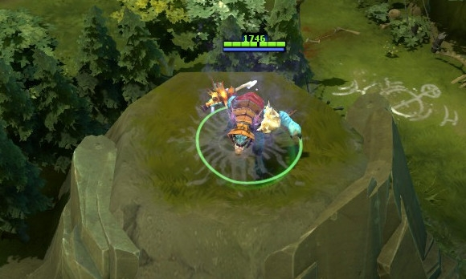
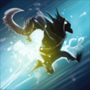

 斯拉克
斯拉克
背景故事
除了水下住民，暗黑之礁很少为世人所知晓，这是座沉没之牢，关押的都是犯下滔天罪行的海洋生物。这座监牢外围装满了倒钩，里面充斥着心狠手辣的鱼人，狡猾歹毒的深海住民还有嗜杀同类的南海人。在这阴暗的迷宫中，鳗鱼四处巡逻，巨大的海葵担任着守卫的工作，在里面想不死就只能为恶。斯拉克被投入暗黑之礁的罪名已经不得而知，他在里面待的半生泯灭了亲情和良知，信任的只有自己，信奉的生存之道是鬼祟的行动和冷酷的心肠，他的脑海中不断酝酿自己的想法和计划。当臭名昭著的暗黑之礁十二恶棍密谋着越狱时，他们完美地将计划保密，发现蛛丝马迹的人都被他们杀害-但是他们的阴谋不知怎么的被斯拉克发现了，他在这计划中给自己找到了容身之地。越狱过程中十个恶棍遭到击毙，剩下两个被擒获，押回了暗黑之礁，作为那里犯人们的消遣活动被处以极刑。但是斯拉克，无名的第十三个越狱犯，利用暴乱作掩护逃之夭夭；永获自由。现在斯拉克隐居在紧靠影承废墟南部的食肉红树林灌丛中，迄今为止，他仍是唯一成功从暗黑之礁越狱的逃犯。
黑暗契约 经过1.5秒施法延迟后，每隔0.1秒释放1道伤害波造成伤害，总共10道。 魔法消耗：55/50/45/4
冷却时间：9.0/8.0/7.
|
突袭 施放后斯拉克以933.33的速度向前跳跃，抓住敌方英雄或跳跃700码后停下。 魔法消耗：75/75/75/7
冷却时间：20.0/16.0/
|
能量转移 斯拉克的攻击会偷走敌方英雄的生命能量，每次吸取他们的一点全属性并转化成自身额外的敏捷值。 属性值最少为1点。 魔法消耗：0
冷却时间：0
|
暗影之舞 斯拉克将自己藏进暗影之云，变成隐身状态，不会被反隐手段发现。攻击、施法、使用物品都不会使斯拉克显形。该技能还有被动效果，在敌人视野外时移动速度和生命恢复速率会得到提高。 如果斯拉克受到中立生物的攻击，2秒内将失去被动的移速加成和生命恢复效果。 魔法消耗：120/120/12
冷却时间：60.0
|